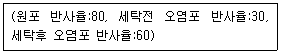
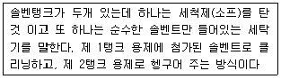
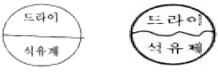
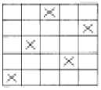
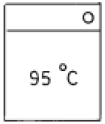

세탁기능사 (2005-07-17 기출문제)
1과목: 세정이론
1. 대전 방지가공 방법으로 맞는 것은?
- 텀블러 이후에 스프레이로 분사한다.
- 음이온 세제에 양이온 대전방지제를 첨가 후 처리한다.
- 세탁전에 스프레이로 분사한다.
- 세탁물을 드라이 클리닝 세정액과 대전방지제 액에 침지한다.
(정답률: 55%)

2. 보일러의 부피를 일정하게 유지하고 증기의 온도를 상승시켰을 때 압력은 어떻게 되는가 ?
- 일정하다.
- 감소한다.
- 상승한다.
- 압력과 관계없다.
(정답률: 92%)
3. 오점분류 및 오점제거에 관하여 틀리게 설명한 것은?
- 과즙은 수용성 오점에 속하며, 대부분 수성 소프로 제거한다.
- 유용성 오점은 웨트크리닝이 바람직하다.
- 불용성 오점 중 녹물은 수산이 좋다.
- 잉크 제거는 화학작용으로 다른 색이나 무색으로 변화시켜 제거한다.
(정답률: 67%)
4. 용제관리의 필요성에 대한 설명으로 가장 부적당한 것은?
- 물품을 상하게 하지 아니한다.
- 재오염을 방지한다.
- 세정효과를 높인다.
- 정전기 발생을 방지한다.
(정답률: 66%)
5. 클리닝의 일반적인 효과에 관한 사항 중 잘못된 것은?
- 음식물이 옷에 묻으면 곰팡이와 기생충이 생기므로 바로 클리닝을 하는 것이 좋다.
- 오점이 묻은 옷을 아이롱만 계속하여 착용하여도 섬유와 오점빼기에 어려움이 없다.
- 오점이 묻으면 유용성 오점인가 수용성 오점인가 진단이 필요하다.
- 오점이 오래되면 제거하기가 매우 어려워진다.
(정답률: 74%)
6. 제품 표시의 진단방법에 대하여 가장 바르게 표현된 것은?
- 섬유제품에 부착되어 있는 표시는 그대로 믿어도 된다.
- 표시가 부착되어 있지 않는 것은 실험없이 물세탁도 가능하다.
- 등록상표 또는 승인번호 등 회사명이 기록된 표시가 부착되어 있더라도 일단 기초 실험 후 처리한다.
- 유명회사 제품은 실험없이 바로 공정에 들어가도 가능하다.
(정답률: 81%)
7. 일반적인 세탁조건에 대한 설명 중 틀린 것은?
- 적당한 세제농도는 2-3%이다.
- 적당한 세탁물 온도는 35-40℃이다.
- 세탁용수의 분량은 직물 무게의 20-30배이다.
- 섬유의 종류, 오점형태, 세탁방법에 따라 적절한 세제를 선택하여야 한다.
(정답률: 52%)
8. 다음의 표면 반사율로 세척율을 구하면?

- 40%
- 50%
- 60%
- 70%
(정답률: 82%)
9. 세정기는 세액을 회류시키는 방법에 따라 분류 할 수 있다. 다음 중 잘못 분류된 것은?
- 과류식
- 교반식
- 낙차식
- 회전드럼식
(정답률: 62%)
10. 세탁용수 중 센물을 단물로 바꾸는 방법 중 맞지 않는 것은?
- 끓이는 법
- 알칼리를 가하는 법
- 염소를 타서 사용한다
- 이온교환 수지법
(정답률: 61%)
11. 더러움이 심한 용제를 침전법으로 청정화할 때 적합한 청정제는?
- 실리카겔
- 경질토
- 활성백토
- 규조토
(정답률: 52%)
12. 다음 중 수용성 오점에 해당되는 것은?
- 겨자
- 고무
- 구두약
- 그을음
(정답률: 86%)
13. 다음 섬유 중 더러움이 빨리 타는 순서대로 나열한 것은?
- 면 - 마 - 양모
- 레이온 - 비닐론 - 나일론
- 나일론 - 마 - 아세테이트
- 양모 - 면 - 레이온
(정답률: 77%)
14. 다음 중 비누의 장점은?
- 가수분해되어 유리 지방산을 생성한다.
- 산성 용액에서는 사용할 수 없다.
- 알칼리성을 첨가해야만 세탁효과가 좋다.
- 피부를 거칠게 하지 않고 합성 세제보다 환경을 적게 오염시킨다.
(정답률: 64%)
15. 다음에서 고체 오점이 아닌 것은?
- 매연
- 점토
- 철분
- 유분
(정답률: 78%)
16. 일반적으로 보일러의 종류에 해당되지 아니한 것은?
- 원통보일러
- 수관보일러
- 특수보일러
- 상용보일러
(정답률: 74%)
17. 드라이클리닝용 유지용제의 세척력을 결정해 주는 것이 아닌 것은?
- 표백력
- 용해력
- 표면장력
- 용제의 비중
(정답률: 69%)
18. 사무진단이 아닌 것은?
- 의류 물품의 종류, 수량, 색상
- 의류 부속물의 유무
- 의류에 부착된 장식성이 높은 단추
- 의류의 변형에 관한 사항
(정답률: 63%)
19. 클리닝의 일반적인 효과와 상관이 적은 것은?
- 오점을 제거하여 위생수준을 향상시킨다.
- 세탁물을 수선 또는 표백효과를 부여한다.
- 세탁물에 대한 내구성을 유지시킨다.
- 고급의류는 패션성을 보전한다.
(정답률: 65%)
20. 다음 중 산화 표백제인 것은?
- 나프탈렌
- 장뇌
- 실리카겔
- 차아염소산 나트륨
(정답률: 86%)
2과목: 기술관리
21. 보기 중에서 세탁방법이 가장 좋고, 노력도 적게 드는 가정에서의 세탁방법은?
- 비벼 빨기
- 삶아 빨기
- 두들겨 빨기
- 솔로 빨기
(정답률: 75%)
22. 다음 섬유를 세탁시 오염된 세액에 의해 재오염성이 가장 큰 세탁물은?
- 모
- 나일론
- 폴리에스테르
- 면
(정답률: 42%)
23. 습식세탁(laundry)을 틀리게 설명한 것은?
- 세탁 후 마무리 처리나 형태를 바로잡기가 드라이클리닝보다 어렵다.
- 섬유의 변형이나 수축 및 손상이 일어나기 쉽다.
- 세척력이 강하며 수용성오점, 찌든 때의 섬유처리에 효과적이다.
- 알칼리세제 투입으로 유용성 오점 제거에 높은 효과가 있다.
(정답률: 54%)
24. 화학섬유의 다림질 부주의로 오는 현상이 아닌 것은?
- 아세테이트, 비닐론은 습기를 주거나 과열하면 광이 죽거나 경화된다.
- 나일론, 폴리에스테르는 180∼200 ℃의 높은 온도에는 순간적으로 녹아 붙으며 용융된다.
- 면, 마의 적정온도는 180∼200℃이나 프레스나 다림질하면 탄화한다.
- 폴리프로필렌은 140℃이상에서는 갑자기 열축을 일으키므로 주의해야 한다.
(정답률: 65%)
25. 론드리용 기계인 워셔(washer)에 대하여 잘못 설명된 것은?
- 이중 드럼식으로 용수가 절약된다.
- 드럼식이므로 세탁물의 손상이 비교적 적다.
- 내부드럼의 회전속도는 세탁효과에 크게 영향을 미친다.
- 이중드럼식은 드럼의 측면이 열리는 엔드로딩형과 드럼의 끝에서 세탁물을 넣게된 사이드로딩형이 있다.
(정답률: 53%)
26. 스파팅 머신에 대한 설명 중 틀린 것은?
- 콤푸레셔에서 발생하는 에어와 스팀은 함께 사용할 수 있다.
- 의복에서 떨어진 얼룩찌꺼기, 수분, 먼지, 염료, 실 보프라기 등이 제거된다.
- 오점처리시간을 단축시킨다.
- 오점은 잘 제거되나 얼룩은 그대로 남는다.
(정답률: 69%)
27. 웨트클리닝의 처리법에 대한 다음 설명 중 맞는 것은?
- 염색이 증가하거나 형이 일그러지는 것 등에 주의해야 한다.
- 모든 대상품에 대해 동일한 처리법으로 처리해야 한다.
- 비교적 큰 물품이나 형이 잘 흐트러지는 것은 손빨래로 한다,
- 색이 빠지기 쉬운 것이나 작은 물품은 손빨래로 한다.
(정답률: 67%)
28. 다음 중 얼룩빼기 기계가 아닌 것은?
- 세탁봉
- 스팀건
- 젯트스폿트
- 초음파 얼룩빼기 기계
(정답률: 75%)
29. 론드리에서 풀을 먹이는 목적과 관계가 없는 것은?
- 곰팡이 발생을 방지한다.
- 오염을 방지하고, 세탁효과를 좋게 한다.
- 천을 촉감을 변화하고 광택을 준다.
- 천의 내구성을 좋게 한다.
(정답률: 61%)
30. 다음 약품 중 표백을 하는데 사용하는 것은?
- 차아염소산나트륨
- 솔벤트
- 계면활성제
- 메틸알콜
(정답률: 79%)
31. 웨트클리닝으로 처리하는 대상품 중 틀린 것은?
- 순모로 된 점퍼
- 염화비닐 합성피혁
- 수지안료 가공제품
- 고무를 입힌 제품
(정답률: 69%)
32. 다림질과 관계없는 기능은?
- 흡입
- 스팀
- 압력
- 축융
(정답률: 67%)
33. 드라이클리닝 공정 중 다음의 설명은 어느 system을 나타내는가 ?

- 차지시스템
- 뱃지시스템
- 투뱃지시스템
- 논차지시스템
(정답률: 54%)
34. 다음과 같은 표시가 된 제품을 드라이크리닝 하는 방법은?

- 용제의 종류는 석유계를 제외하고는 모두 사용할 수 있다.
- 석유를 섞은 물을 조금 넣어 세탁한다.
- 용제의 종류는 석유계에 한하여 드라이클리닝한다.
- 용제의 종류는 구별하지 않고 석유계를 포함하여 모두 사용할 수 있다.
(정답률: 79%)
35. 센물을 단물로 바꾸는 방법이 아닌 것은?
- 세탁하기 전 물을 끓였다.
- 세탁하기 전 암모니아 수를 가하였다.
- 이온교환수지에 센물을 통과시켰다.
- 세탁하기 전 소금을 가하였다.
(정답률: 66%)
36. 나일론 섬유의 성질로 틀린 것은?
- 강도가 크다.
- 신도가 크다.
- 열가소성이 좋다.
- 내일광성이 크다.
(정답률: 73%)
37. 우리나라에서 주로 사용하고 있는 무명섬유는?
- 이집트면
- 수단면
- 미국면
- 인도면
(정답률: 64%)
38. 다음은 클리닝 대상품을 내용별로 설명한 것이다. 잘못 설명한 것은?
- 내의류라 함은 속내의, 파자마, 기저귀 등을 말한다.
- 셔츠류라 함은 와이셔츠, 블라우스 등을 말한다.
- 드레스류라 함은 드레스, 원피스, 가운과 폴로셔츠를 말한다.
- 스커트류라 함은 주름스커트, 잠바스커트 등을 말한다.
(정답률: 54%)
39. 직물에 방수성을 부여하기 위하여 각종 수지로 섬유표면에 도포(칠 하는 것)한 직물로서 물에 견디는 성질은 우수하나 노화가 쉽고 드라이 용제에 잘 녹을 수도 있는 직물은?
- 고무로 처리한 직물
- 동물성섬유로 처리한 직물
- 혼방직물로 처리한 직물
- 아크릴 수지로 처리한 직물
(정답률: 48%)
40. 개버딘은 어떤 직물조직인가?
- 평직
- 능직
- 주자직
- 익조직
(정답률: 73%)
3과목: 클리닝대상품
41. 다음 직물 조직도의 직물 조직명은?

- 평직
- 능직
- 여직
- 주자직
(정답률: 64%)
42. 섬유의 상품그림 중 물세탁 방법에서 취급상 주의 표시기호의 뜻이 맞지 않는 것은?

- 물의 온도 95℃를 표준으로 세탁할 수 있음
- 세제의 종류에 제한을 받지 않음
- 세탁기에 의하여 세탁할 수 없음
- 손세탁이 가능함
(정답률: 75%)
43. 다음 중 반합성섬유는 어느 것인가?
- 아세테이트
- 면
- 견
- 양모
(정답률: 85%)
44. 합성섬유의 성질이 잘못된 것은?
- 폴리에스테르 - 내추성이 크다.
- 아크릴 - 내일광성이 크다.
- 나일론 - 탄성회복률이 크다.
- P.P섬유 - 흡습성이 크다.
(정답률: 54%)
45. 의류제품의 필수 품질표시 사항에 속하지 않는 것은?
- 섬유의 혼용율
- 취급상 주의사항
- 길이 및 중량
- 치수
(정답률: 61%)
46. 다음의 인피섬유(껍질섬유)중에서 의복재료로서의 가치가 가장 큰 것은?
- 청마
- 대마
- 저마
- 황마
(정답률: 84%)
47. 모피(毛皮)의 가치를 결정짓는 가장 중요한 요인이 되는 것은?
- 면모의 밀도
- 강모의 강도
- 조모의 길이
- 조모의 색채
(정답률: 74%)
48. 피혁과 인공피혁에 관련된 사항 중 틀린 것은?
- 피혁은 포유동물의 피부를 벗겨 낸 것으로 가죽에서 털을 제거하고 적당한 약품으로 처리한 것이다.
- 인공피혁은 일반적으로 천연피혁보다 강도가 떨어지나 의류용으로 사용하는 데에는 지장이 없다.
- 천연피혁은 인공피혁보다 내굴곡성이 떨어져서 표면에 굴곡이 생기는 단점이 있다.
- 스웨이드는 가죽의 내면쪽을 기모 가공한 것이고, 털이 붙어 있는 채로 처리한 것을 모피라 한다.
(정답률: 56%)
49. 명주섬유의 성질 중 가장 옳은 것은?
- 열에 대하여 양털보다는 매우 약하다.
- 다른 섬유에 비해 일광에는 약한 편이다.
- 흡습성이 불량하여 공정수분율은 2% 정도이다.
- 섬유장은 긴편이나 탄성회복율이 매우 불량하다.
(정답률: 51%)
50. 면 섬유 중 품질이 가장 좋은 것은?
- 굵고 짧은 것
- 가늘고 짧은 것
- 가늘고 긴 것
- 굵고 긴 것
(정답률: 65%)
51. 다음중에서 면사의 굵기를 나타나는 번수에 대하여 틀린 것은?
- 실의 굵기는 길이에 대한 무게와 무게에 대한 길이의 비로서 나타낸다.
- 80데니어의 나일론사는 60번수의 나일론보다 굵다.
- 50번수의 면사는 60번수의 면사보다 가늘다.
- 50번수의 면사는 60번수의 면사보다 굵다.
(정답률: 48%)
52. 다음 섬유중에서 프레스 커버용으로 가장 적당한 것은?
- 면
- 폴리에스테르
- 양모
- 견
(정답률: 45%)
53. 다음 섬유 중 불꽃 속에서도 잘 타지 않는 섬유는?
- 폴리에스테르 섬유
- 모다아크릴 섬유
- 석면 섬유
- 폴리올레핀 섬유
(정답률: 76%)
54. 부직포의 특성은?
- 잘린 올이 잘 풀리나 의복용으로는 부속품이나 장식적으로 사용되고, 여과포로도 이용되기도 한다.
- 값이 싸고 유연성이 부족하나 의복제작에서 심감으로 주로 사용된다.
- 통기성이 좋아 시원한 감을 주고, 커텐, 칼라, 엑세서리 등에 이용된다.
- 광택이 좋고 신축성이 좋으나 구김이 잘 생긴다.
(정답률: 59%)
55. 면섬유에 가장 적당한 염료는?
- 산성염료
- 분산염료
- 염기성염료
- 반응성염료
(정답률: 63%)
4과목: 공중위생법규
56. 다음 중 공중 위생법 시행령은?
- 대통령령이다
- 부령이다
- 총리령이다
- 법률을 말한다
(정답률: 77%)
57. 다음 중 드라이클리닝용 세탁기의 유기용제 누출 및 세탁물에 사용된 세제나 유기용제 또는 얼룩제거 약제가 남거나 좀이나 곰팡이 등이 생성된 때의 행정처분 기준(1차위반시)은?
- 개선명령
- 경고
- 영업정지
- 영업장 폐쇄명령
(정답률: 65%)
58. 다음중에서 트리클로로에탄이나 퍼클로에칠렌 등의 세제를 사용하는 세탁용 기계의 안전관리를 위한 시설로 옳은 것은?
- 개방형이거나 용제회수가 부착된 세탁용 기계를 사용하여야 한다.
- 밀폐형이거나 용제회수가 부착된 세탁용 기계를 사용하여야 한다.
- 밀폐형이고 용제회수가 용이하지 아니한 세탁용 기계를 사용하여야 경제적인 시설이다.
- 개방형이고 용제회수가 용이한 세탁용 기계를 사용하여야 경제적인 시설이다.
(정답률: 52%)
59. 공중위생 영업자의 위생관리 의무로 맞는 것은?
- 공중위생 영업장의 설치
- 영업관련 시설 및 설비를 위생적이고 안전하게 관리
- 유해물질의 발생
- 세제의 제조 및 판매
(정답률: 76%)
60. 과징금을 부과하는 위반행위의 종류·정도에 따른 과징금의 금액 등은 어느 령으로 정하는가?
- 도지사령
- 보건복지부령
- 국무총리령
- 대통령령
(정답률: 68%)